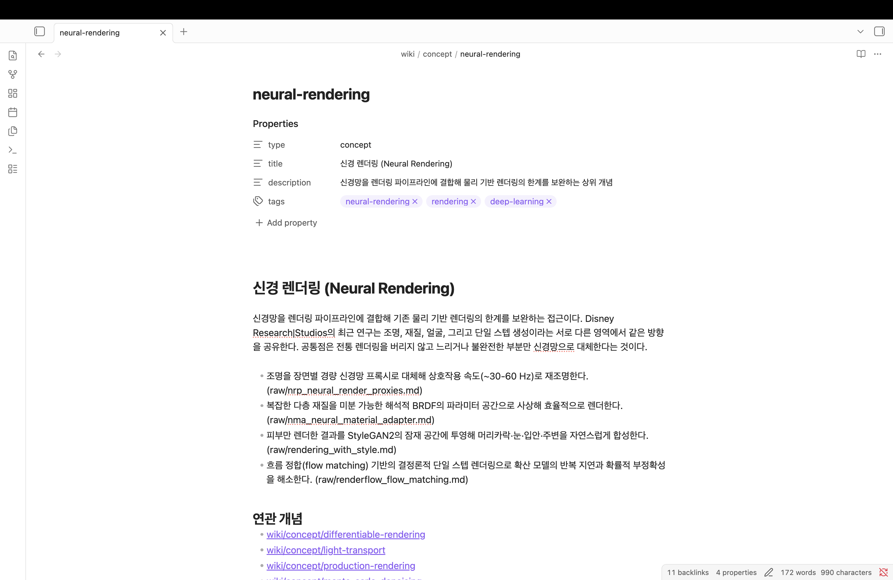

① 지식관리 에이전트를 위한
LLM wiki와 OKF 이해하기
이런 걸 배워요
핵심 내용
AI가 읽을 수 있는 자료의 변화
Andrej KarpathyOpenAI 창립 멤버(2015)이자 테슬라에서 AI 개발을 총괄(2017~2022)한 연구자입니다. 스탠퍼드 CS231n 강의를 만든 사람으로도 알려져 있습니다. 안드레이 카파시
지식관리 에이전트사람이 시킨 일을 대신 처리하는 AI를 에이전트라고 부릅니다. 그중에서 자료를 읽어 정리하고, 물으면 찾아 답하고, 빠진 곳을 짚어 주는 일을 맡는 것이 지식관리 에이전트입니다. 오늘은 Claude가 그 역할을 합니다.
RAG자료를 미리 잘게 쪼개 저장해 두고, 질문이 올 때마다 관련 조각을 찾아 붙여 답을 만드는 방식. 파일을 올려 두고 쓰는 챗봇은 대개 이 방식입니다. Retrieval-Augmented Generation
마크다운글씨 크기나 목록 같은 서식을 기호 몇 개로 표시하는 글쓰기 형식. 그냥 텍스트 파일이라 어떤 프로그램에서든 열립니다. 파일 확장자는 .md
프론트매터문서 맨 앞에 --- 로 감싸 적어 두는 정보. 이 문서가 무엇에 관한 것인지를 사람과 프로그램이 함께 읽을 수 있게 합니다. Obsidian에서는 속성(Properties) 이라고 부릅니다. front matter
위키링크대괄호 두 개로 문서 이름을 감싸면 그 문서로 이어지는 링크가 됩니다. Obsidian이 이 표시를 읽어 그래프의 선을 그립니다. OKF 규격 자체는 일반 마크다운 링크를 쓰지만, 오늘은 그래프를 볼 것이라 이쪽을 씁니다.
이런 적 있으신가요
AI에게 내 자료를 읽히려 할 때 자주 생기는 일입니다. 한 번 생각해 볼까요.
수업 자료 PDF 여러 개를 올려놓고 물었는데, 답이 자료에 적힌 내용과 어긋났던 적
같은 대화창에서 계속 이어 물었더니 앞에서 한 이야기를 잊어버린 적
어제 정리한 내용을 오늘 다시 물어보려고 같은 파일을 또 올린 적
자료 세 개가 서로 다른 말을 할 때, 물어볼 때마다 답이 달라졌던 적
AI가 읽을 수 있는 자료는 이렇게 변해 왔습니다
RAG가 무엇인가
파일을 올리면 잘게 쪼개 저장해 둡니다. 물어보면 그중 질문과 가까운 조각 몇 개를 찾아 질문 앞에 붙여 AI에게 건넵니다.
아무것도 쌓이지 않습니다
물어볼 때마다 처음부터 다시 찾습니다. 새 자료가 들어와도 기존 자료와 이어지지 않고, 내가 던진 질문과 그 답도 어디에도 남지 않습니다.
매번 처음부터
어제 정리한 내용을 오늘 또 정리합니다. 쌓이는 것이 없습니다.
조각난 채로 도착
꺼내 온 몇 문단만 보고 답합니다. 문서 전체의 흐름은 모릅니다.
서로 어긋나는 자료
자료들마다 다르게 말할 때 정리해 둔 기준이 없어 답이 그때그때 달라집니다.
LLM Wiki: 모을 때 미리 정리해 두기
질문할 때 찾는 대신, 자료가 들어오는 시점에 한 번 읽고 정리해서 위키로 만들어 둡니다. Andrej Karpathy가 2026년 4월에 공개한 메모에서 나온 방식입니다.

정보를 세 층으로 나눠 담습니다
세 가지 작업을 한 바퀴 돌립니다
정리 · Ingest
모은 자료를 읽어 개념 문서로 만듭니다. 같은 개념은 하나로 합칩니다.
질문 · Query
위키를 근거로 묻고 출처 달린 답을 받습니다. 좋은 답은 다시 저장합니다.
점검 · Lint
끊긴 링크와 연결 안 된 문서를 찾아 메웁니다.
위키 문서를 무슨 형식으로 적을까
Google이 2026년 6월에 공개한 형식입니다. 프론트매터가 붙은 마크다운 폴더.

마크다운
어떤 편집기로든 열리고, 특별한 프로그램이 필요 없습니다.
파일 형식
압축해 보내거나 그대로 옮길 수 있습니다.
최소한의 프론트매터
모든 문서에 요구하는 것은 type 하나뿐입니다.
프론트매터는 나중에 골라내기 위한 것입니다
문서 맨 앞에 type: core-concept 처럼 한 줄을 적어 둡니다. 나중에 조건으로 뽑아내려면 이 한 줄이 있어야 합니다.
프론트매터가 없으면
문서가 쌓일수록 제목을 하나씩 눈으로 훑는 수밖에 없습니다.
프론트매터가 있으면
"개념 문서 전부", "논문만", "질문에 답한 문서만" 처럼 조건으로 뽑을 수 있습니다.
지금 시작하면 무엇이 다른가
읽는 자료의 양은 크게 다르지 않습니다. 갈리는 것은 그것을 어떤 형태로 두느냐입니다.
나중에 옮기려는 경우
- 자료는 폴더와 앱에 흩어져 있음
- 필요할 때마다 다시 찾아 올림
- 옮기려면 그때 한꺼번에 정리해야 함
처음부터 이 형태로 쌓는 경우
- 모을 때 한 번 정리해 두고 끝
- 새 자료가 기존 개념에 붙음
- 옮길 일이 없음 — 그냥 폴더